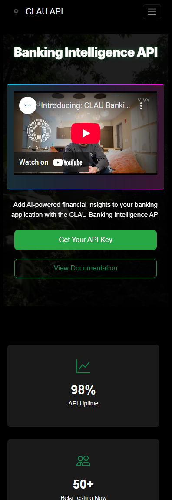

Banking Intelligence API Development Report
Activity for the month of August, 2025
Total Commits
13
Past Month
Pull Requests
5
Merged
Features
4
Implemented
Fixes
3
Applied
Commit Distribution by Type
Commit Distribution Chart
Features: 4 | Fixes: 3 | Merges: 5 | Misc: 1
Weekly Commit Activity
Weekly Activity Chart
Week 1: 0 | Week 2: 0 | Week 3: 11 | Week 4: 2
Commit Timeline
2 weeks ago
849a3ac Shreyas Sreenivas
2 weeks ago
af3909f Shreyas Sreenivas

4 weeks ago
411f41f Shreyas Sreenivas
4 weeks ago
7fcf6cf Shreyas Sreenivas


4 weeks ago
41942d3 Shreyas Sreenivas
4 weeks ago
5ba6f14 Shreyas Sreenivas
4 weeks ago
fb7e51a Shreyas Sreenivas
4 weeks ago
a270359 Shreyas Sreenivas
4 weeks ago
fa0b4d7 Shreyas Sreenivas
4 weeks ago
b4460be Shreyas Sreenivas

4 weeks ago
2908a45 Shreyas Sreenivas
4 weeks ago
65f6f40 Shreyas Sreenivas
4 weeks ago
0cf55b2 Shreyas Sreenivas
This Month's Tasks
Implement Banking Intelligence Command as an Endpoint
Create a new API endpoint that provides banking intelligence commands
for integration with third-party services.
ETA: September 20
Create Authentication System for Banking Command API
Develop secure authentication mechanisms for the new Banking
Intelligence Command API.
ETA: September 25
Documentation for Banking Intelligence Command API
Create comprehensive documentation for developers to integrate with
the new Banking Intelligence API.
ETA: September 28
Testing Framework for Banking Intelligence API
Develop automated testing for the Banking Intelligence Command API to
ensure reliability.
ETA: October 5
Commit Summary
| Date | Hash | Type | Description |
|---|---|---|---|
| 2 weeks ago | 849a3ac | FIX, UI | Added multiple UI fixes and new content |
| 2 weeks ago | af3909f | FIX, UI | Added an expander for the data integration mode division |
| 4 weeks ago | 411f41f | MERGE | Merge pull request #39 from Claui-API/Updating-Documentation |
| 4 weeks ago | 7fcf6cf | FEAT, DOCS, UI | Playground Mode and Documentation Additions |
| 4 weeks ago | 41942d3 | MERGE | Merge pull request #38 |
| 4 weeks ago | 5ba6f14 | FEAT, DB | Added three new DB models to store Bank User details |
| 4 weeks ago | fb7e51a | MERGE | Merge pull request #36 |
| 4 weeks ago | a270359 | FIX | Fixed the prompts to keep previous chats and responses |
| 4 weeks ago | fa0b4d7 | MERGE | Merge pull request #34 |
| 4 weeks ago | b4460be | FIX, UI | Added the mobile related UI fixes |
| 4 weeks ago | 2908a45 | MERGE | Merge pull request #32 |
| 4 weeks ago | 65f6f40 | MISC | . |
| 4 weeks ago | 0cf55b2 | MISC | . |